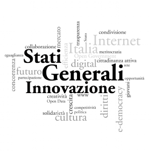

19 marzo, 2012 | di Lorenzo Perone

Noi di TANTO seguiamo da quest‚Äôestate un‚Äôiniziativa in cui crediamo molto: Stati Generali dell’Innovazione. Sergio e Pietro Blu sono i nostri “uomini all’Avana” che ci informano dall’interno. Confrontandomi su questi temi con Sergio, che √® impegnato anche nell‚Äôorganizzazione dell’evento ‚ÄúGenova per l‚Äôinnovazione ‚Äì open smart city‚Äù,¬†ho avuto l’idea di riportare le nostre “quattro chiacchiere nel bar dietro al router” in forma di intervista. Per non mancare di originalit√† l’ho intitolata¬†‚ÄúBologna chiama Genova‚Äù‚Ķ
Sergio, in due parole, che cosa sono gli “Stati generali dell’innovazione”?
SGI √® un’associazione, ma si configura come rete di associazioni, organizzazioni, enti, gruppi e persone singole che operano a diversi livelli (locale, regionale, nazionale, internazionale). Essa √® aperta al contributo di persone di tutte le nazionalit√† e di qualsiasi estrazione sociale, economica e politica che ne condividano i principi. Lo scopo di SGI √® quello di realizzare le condizioni e organizzare gli Stati Generali dell‚ÄôInnovazione, inteso come momento di partecipazione globale di tutti i portatori di interesse verso la costruzione di una prospettiva condivisa per ¬†un cambio effettivo nella politica dell‚Äôinnovazione per l‚ÄôItalia.
In SGI si parla molto di “open data”, cosa indica questo termine?
Con “open data” s’intende un nuovo modello o filosofia che consente di rendere dati e informazioni  “aperti” e accessibili direttamente online.
Più in dettaglio, affinché si possa parlare effettivamente di open data, è necessario che le risorse digitali presentino precise caratteristiche, dal punto di vista tecnico, delle logiche e dinamiche di accesso, utilizzo e riuso.
Le Pubbliche Amministrazioni hanno un ruolo  in questo?
Nell’ambito di questo modello “open” delle risorse digitali e dei software, attualmente uno dei punti focali del dibattito sull’open data è il processo di liberalizzazione dei dati e delle informazioni in possesso della pubblica amministrazione (PA). L’attenzione verso nuovi modelli “trasparenti” e partecipativi delle amministrazioni pubbliche, infatti, solleva con sempre maggiore energia esigenze di “openness” tra gli enti e le istituzioni pubbliche, insieme alle necessità di svecchiamento delle procedure amministrative, sullo sfondo delle nuove tecnologie di internet, del WEB e dei dispositivi mobili.
Parlando di open data, spesso viene usata la sigla “PSI”, ¬†cosa indica?
Con l’acronimo PSI (Public Sector Information РInformazioni del settore pubblico) s’identifica la principale fonte di informazioni in Europa. Tali informazioni sono prodotte e raccolte dagli enti pubblici; esse comprendono mappe digitali, dati meteorologici, dati sul traffico, informazioni giuridiche, finanziarie, economiche e altri dati.
La maggior parte di questi dati “grezzi” potrebbero essere utilizzati, o integrati in nuovi prodotti e servizi, di uso quotidiano, come i navigatori GPS, le previsioni meteo, i servizi finanziari e assicurativi, permettendo a molte nuove realtà aziendali di emergere in questo mercato.
Nel 2003, l’Unione Europea ha adottato la direttiva sul riutilizzo delle informazioni del settore pubblico introducendo un quadro legislativo comune per disciplinare come gli enti pubblici dovrebbero rendere disponibili le loro informazioni per il riutilizzo, eliminando le barriere che impediscono l‚Äôapplicazione, come le pratiche discriminatorie, il monopolio dei mercati e la mancanza di trasparenza.
E la riusabilità ha un ruolo in questo?
Per ri-uso delle informazioni del settore pubblico s’intende il loro utilizzo in nuovi modi, attribuendo ad esse valore aggiunto, combinando le informazioni provenienti da fonti diverse, facendo mash-up e nuove applicazioni, sia a fini commerciali che non.
Nel dicembre 2011 la Commissione Europea ha presentato una strategia per l’Europa che definisce norme pi√π chiare per realizzare l‚Äôuso migliore delle informazioni detenute dalla PA. La strategia sugli open data proposta render√† pi√π semplice alle imprese e ai cittadini trovare e ri-usare le informazioni detenute sia da organismi del settore pubblico degli Stati membri, sia dalla Commissione stessa. Proprio per questi motivi, la Commissione prevede di aggiornare la direttiva del 2003.
Le aziende possono trarre ¬†vantaggio dagli “open data”?
Le informazioni del settore pubblico hanno un grande potenziale economico. Secondo un’indagine sull’impatto economico delle informazioni del settore pubblico, condotto dalla Commissione Europea nel 2011 (studio Vickery), i vantaggi economici diretti e indiretti sono stimati in circa 140 miliardi di euro in tutta l’Unione europea. L‚Äôaumento del riutilizzo di PSI genera nuove imprese e posti di lavoro e fornisce ai consumatori pi√π scelta e pi√π valore. Naturalmente tali opportunit√† di sviluppo, essendo legate a cambiamenti culturali, non sono cos√¨ evidenti e debbono essere intraprese azioni per favorirne l‚Äôindividuazione. Un esempio di iniziativa con questo fine √® Apps4Italy, un concorso aperto a progetti di soluzioni utili e interessanti basate sull‚Äôutilizzo di dati pubblici, capaci di mostrare a tutta la societ√† il valore del patrimonio informativo pubblico.
Tra le azioni prioritarie contro lo “spread digitale” definite in occasione del primo incontro degli Stati Generali dell’Innovazione, svoltosi a Roma  il 25-26 novembre 2011, sono presenti specifiche azioni proprio per favorire il processo di liberalizzazione dei dati pubblici, condizione indispensabile perché progetti come quelli sollecitati da Apps4Italy possano moltiplicarsi.
Inoltre, il sito dell’associazione raccoglie interventi, idee, contributi sul tema open data, come “La democratizzazione dei dati per abbattere il data divide”, in cui Pietro Blu esamina le difficoltà per fare incontrare domanda e offerta di “open data” e propone alcune azioni per colmare la distanza che le separa.
Posted in Entropia | No Comments »
15 febbraio, 2012 | di Pietro Blu Giandonato
Ieri mattina ho avuto modo di partecipare alla conferenza stampa dell’assessore Angela Barbanente, che assieme alla dirigente del Servizio Assetto del Territorio regionale Francesca Pace, alla presidente Sabrina Sansonetti e al direttore Francesco Saponaro di Innovapuglia e alla responsabile del SIT regionale Tina Caroppo, hanno presentato l’ortofoto 2010 che la Regione Puglia ha acquisito in “riuso” dall’Agenzia per le Erogazioni in Agricoltura (AGEA). In effetti la cessione non è avvenuta a titolo gratuito, l’assessore non ha specificato la somma pagata, pur assicurando si tratti di una cifra “simbolica”.

Riguardo il riuso dei dati tra Pubbliche Amministrazioni, purtroppo la normativa europea e nazionale (se parliamo di dati geografici la Direttiva INSPIRE e il suo D.Lgs. di recepimento) dà facoltà al soggetto detentore di cedere i dati dietro pagamento di un corrispettivo, che dovrebbe ricompensare i costi di produzione e aggiornamento del dato (per approfondimenti a riguardo vi rimando a quest’altro mio articolo).
Le caratteristiche dell’ortofoto AGEA 2010
Fino a poco tempo fa i dati di base della Regione Puglia erano costituiti unicamente dalle ortofoto CGR del 2005 e del 2006, da quest’ultima poi sono state derivate la CTR numerica in scala nominale 1:5.000, e la carta di uso del suolo (in realtà un dato di copertura del suolo), oltre a un DSM a 8 metri, tutti dati dei quali avevo parlato sempre su TANTO in questo articolo.
Questa ortofoto AGEA del 2010 costituisce dunque un importante aggiornamento della base imagery, caratterizzata da scala nominale 1:10.000 e risoluzione a 50 cm, con la differenza sostanziale però che mentre per gli enti locali pugliesi i singoli fotogrammi sono disponibili gratuitamente, per cittadini e imprese è fruibile solo ed esclusivamente mediante servizio WMS (i dettagli li trovate qui), e non è scaricabile liberamente come per i dataset che ho citato prima.
Il servizio WMS che eroga dati raster del SIT Puglia, mette a disposizione due strati relativi alla ortofoto AGEA 2010: uno relativo all’intera copertura regionale, l’altro solo per la fascia costiera (circa 1 km di ampiezza). Le differenze tra i due però sembrano sostanziali, pur essendo riferiti entrambi al 2010 le riprese non coincidono temporalmente, e la definizione del dato costiero è nettamente migliore di quello totale, probabilmente a causa del ricampionamento a seguito di compressione e mosaicatura dei fotogrammi originali nel formato ECW. Potete apprezzare il confronto tra le varie ortofoto nella mappa qui sotto.
Clicca qui per ammirare la mappa a pieno schermo realizzata con Leaflet…
Con licenza parlando…
Il problema del riuso dei dati pubblici è come sappiamo tutti uno dei grossi nodi da sciogliere. Logica vorrebbe che un dato pagato con le tasse dei cittadini, ritorni ad essi senza costi ulteriori, e che se ne possano fare anche usi commerciali, il minimo sindacale dunque sarebbe associarvi una licenza CC BY.
I dati geografici scaricabili dal SIT Puglia (ho scritto un articolo che li annovera in un compendio più ampio) sono sottoposti a due differenti disclaimer (primo e secondo) che ne vietano comunque la cessione a terzi e il riuso a fini commerciali. Insomma, un professionista del territorio (ingegnere, architetto, geologo) non potrebbe a questo punto usare i dati del SIT Puglia per il proprio lavoro. Una evidente contraddizione che ha necessità di essere risolta. In passato, le molte email scambiate con il servizio tecnico del SIT Puglia per ottenere chiarimenti sulla licenza d’uso non hanno portato a nulla.
L’occasione della conferenza stampa è stata dunque per me un’occasione imperdibile per capire direttamente, dall’assessore al ramo e dalla responsabile del SIT Puglia, come interpretare la questione.
Ho dapprima contestualizzato il mio intervento, sottolineando innanzitutto come l’hype sugli open data sia ormai altissimo nell’opinione pubblica italiana, e come molte Pubbliche Amministrazioni stiano abbracciandone la causa, aprendo i propri dati, dando vita a portali dai quali poterli fruire Рnon ultimo il Governo italiano - e concorsi di idee per il loro sfruttamento, come Apps4Italy. E naturalmente ho ricordato l’esistenza della proposta di legge regionale su open software e open data, che si spera verrà presto portata in consiglio. I nostri interlocutori hanno mostrato di essere ben consapevoli di tutto ciò.
Ho poi domandato con chiarezza se i dati presenti sul SIT Puglia siano (ri)utilizzabili anche a scopi commerciali, ad esempio se un professionista del territorio può impiegarli nelle relazioni tecniche che redige abitualmente per il proprio lavoro. E la risposta è stata più che affermativa. Infatti la Regione, ad esempio nelle procedure per la redazione dei PUG comunali, spinge fortemente affinché i tecnici usino proprio i dati del SIT Puglia. Mi sono sentito a quel punto di rilanciare, chiedendo se i dati regionali possano essere utilizzati da soggetti terzi anche a scopi commerciali, ad esempio realizzando servizi e applicativi destinati a cittadini e imprese. Tante volte abbiamo detto che favorire l’apertura dei dati pubblici costituirebbe un formidabile volano per far ripartire l’economia nazionale. Anche qui ho ottenuto una risposta convintamente positiva.
Ricapitolando, la Regione Puglia è assolutamente convinta ad aprire i propri dati a tutti, rendendoli accessibili e riutilizzabili, ma abbiamo i disclaimer per i dati del SIT Puglia che di fatto ne impediscono l’uso a scopi commerciali. A questo punto va fatta chiarezza una volta per tutte, la Regione dovrebbe adottare una licenza che consenta davvero il riuso, ovvero almeno CC BY.
…nell‚Äôattesa che presto anche in Puglia nasca il portale dati.puglia.it
Un grazie speciale a Andrea Borruso, che mi ha indotto a sporcarmi le mani con Leaflet, una strepitosa libreria JS – che ho usato per questo articolo – alla portata di (quasi) tutti per realizzare mappe su web esteticamente belle, molto performanti ed estremamente flessibili.
Posted in Dati | 25 Comments »
19 gennaio, 2012 | di Sergio Farruggia
Quest’avventura ha ancora pochi mesi di vita, ma vale già la pena di essere raccontata. Tutto è nato da una mail ricevuta lo scorso maggio: “Ti scrivo perché con i colleghi, abbiamo deciso d’intensificare la collaborazione con alcuni siti blog del settore, aprendo il sito di GEOmedia a contributi diretti ed indiretti”. Seguì una chiacchierata telefonica, in cui si valutò interessante organizzare una teleconferenza con i corrispondenti blogger.
La riunione telefonica avvenne puntualmente un mese più tardi. Alfonso Quaglione –l’autore della mail- espose ai blogger invitati, tra cui noi di TANTO, le proposte della Rivista, per quale finalità erano nate, ecc. ecc. Si raccolsero le prime impressioni, i commenti e i contributi. Alcuni espressero perplessità; emerse anche qualche critica. Luglio e agosto passarono, ancora tra qualche scambio di email, per puntualizzare punti di vista e per precisare meglio i dubbi.
Tralascio di soffermarmi sui distinguo. Quanto esporrò nel seguito prese infatti le mosse dalla constatazione che -in generale- tutti gli interventi fossero legati da un fil rouge, esprimibile in forma di auspicio: “Possiamo e dobbiamo continuare a parlarne”. Tra le idee e i possibili obiettivi espressi nella prima riunione virtuale di giugno, certamente questi trovavano ampia condivisione:
- portare i temi pi√π importanti dell’informazione geografica anche all‚Äôattenzione dei non addetti ai lavori
- creare un network dell’informazione geografica.
Valeva quindi la pena provare a fertilizzare questo dialogo, innescato dall’apprezzata rivista di geomatica, cercando occasioni per collaborare in quella direzione condivisa, ripromettendosi di operare per attrarre l’attenzione e l’interesse di chi –singole persone e aggregazioni- ne avesse approvato le finalità.
E’ a questo punto che entra in scena “Stati Generali dell’Innovazione” –SGI. I promotori di questa iniziativa –di cui su TANTO abbiamo scritto ormai in diverse occasioni (leggi qui e qui)- erano impegnati negli stessi mesi nell’organizzazione di un evento che richiamasse la partecipazione di tutti i portatori d’interesse verso la costruzione di una prospettiva condivisa per un cambio effettivo nella politica dell’innovazione per l’Italia.
In sintesi, le cose sono andate così.
SGI è un’associazione –ha anche uno statuto- ma si presenta meglio come una rete di associazioni, organizzazioni, enti, gruppi e persone singole, unite da uno scopo ben preciso: “Fornire contributi alla classe dirigente per attuare scelte rivolte alla realizzazione di un sistema di innovazione diffusa, un’innovazione che nasca dalle comunità e che al benessere delle comunità, in quanto reti relazionali, economiche e sociali, sia principalmente rivolta.”
Prendere parte alle attività di SGI è semplice e ci si può coinvolgere in modi diversi, con impegno differente: puoi visitare la pagina o iscriverti al gruppo FB; puoi seguire l’iniziativa su Twitter (@SGInnovazione); si può prendere parte alle discussioni avviate sui forum aperti sul sito dell’associazione, puoi restare connesso utilizzando gli RSS, iscriverti alla mailing-list; puoi aderire all’iniziativa, associarti -come organizzazione o singolo-, insomma i canali per ricevere informazioni e comunicare le proprie idee non mancano.
E’ sembrato –non a tutti, ma a più d’uno- il contesto appropriato per provare a individuare e proporre argomenti e idee riguardanti l’Informazione Geografica che –per il loro valore o per le interconnessioni con altri temi- destino attenzione all’interno di tale costituenda comunità e, per questa strada, vedere anche se potesse formarsi almeno un ordito di ciò che potrebbe poi diventare una rete geomatica “costituita dal basso”.
Così, “zitti zitti, piano piano”, senza fare confusione… un gruppetto di geomatici si è affacciato a SGI. Il primo –atteso- incontro pubblico ha avuto luogo il 25 e il 26 novembre scorsi. Come ho raccontato qua, l’esperienza è stata più che positiva: una conferma sia del clima partecipativo e collaborativo che traspariva già in Rete, sia di come i temi dell’Informazione Geografica possano essere accolti, recepiti e apprezzati in un contesto ICT generale e inquadrato sui contributi che tutti possiamo dare per raggiungere gli scopi per cui SGI è stata costituita.
La rete si sta formando
Il convegno di fine novembre è stato solo l’inizio, un buon inizio –scrivono gli organizzatori- per gli Stati Generali dell’Innovazione. L’esito, infatti, in termini di adesioni, partecipazione, temi affrontati e conclusioni a cui si è pervenuti, pongono già questa “meta-associazione” quale realtà con cui chi governa potrà confrontarsi e una risorsa per tutti coloro che vogliono produrre un vero cambiamento nelle politiche  dell’innovazione del nostro Paese.
Il “gruppetto” nato grazie alle discussioni estive di cui vi ho raccontato, ha continuato a dialogare in Rete, si è un poco rafforzato e ha iniziato a interagire all’interno degli Stati.
SGI sta alacremente costruendo una roadmap per il 2012, la roadmap dell’Italia che innova. E’ stata già formalizzata la Consulta Permanente degli SGI, sono avviate attività sui temi principali e più urgenti individuati; si sta definendo un calendario di eventi per portare il confronto degli SGI su tutto il territorio nazionale e altro ancora.
Consultando le otto schede, per altrettante azioni, messe a punto nel corso dell’incontro di novembre, possono affiorare molti argomenti legati o affini alle tematiche dell’Informazione Geografica. Stati Generali dell’Innovazione offre quindi la possibilità di entrare in contatto con soggetti che assumono intrinsecamente l’IG quale componente delle risorse che possono contribuire all’innovazione del Paese. Un’opportunità nuova per cooperare nella promozione delle istanze del nostro settore,  condividendo esigenze comuni. Per esempio, alcuni aspetti legati allo sviluppo delle Infrastrutture di Dati Territoriali a livello sub-nazionale si possono pienamente approfondire anche nell’ambito di un programma per promuovere il federalismo digitale, com’è stato articolato nella scheda “Inclusione digitale – Azione 1”. Così pure, non riesco a pensare a un programma che persegua il modello delle smart cities (scheda “Creatività e conoscenza condivisa РAzione 2”), senza “smart geo-data e smart geo-services”. Oppure ancora: quali contributi possono dare i geomatici rispetto al mutamento di modello di governance del settore pubblico, all’Open Government?
Vi sono processi in corso per cui potrebbe essere deleterio e controproducente lavorare a compartimenti. Credo sia allora un’opportunità quanto proposto dal programma per rendere pubblici e in formato aperto i dati della Pubblica Amministrazione (scheda “Open Government РAzione 1”). Sarebbe assai curioso non trovare visi noti al Tavolo di lavoro sugli Open Data che verrà costituito nei prossimi mesi.
Un’ultima annotazione: come sempre, in questi primi giorni del 2012 le associazioni del nostro settore, così come enti e varie organizzazioni, sono certamente già impegnate nella preparazione di convegni, workshop, seminari con finalità tecnico-scientifiche, per promuovere progetti, con scopi divulgativi. Per alcuni temi e in alcune circostanze, verificare sinergie con SGI, verificare se vi possono essere motivi di arricchimento per la road map “dell’Italia che innova”, potrebbe generare valore per l’iniziativa in corso di programmazione. Ugualmente, la geo-rete ipotizzata può essere portatrice di contributi geomatici nell’ambito di eventi organizzati da SGI e suoi associati.
 Fin qui l’attività di “apri-pista” che abbiamo svolto. L’idea iniziale degli amici di GEOmedia ha innescato un dibattito certamente utile. Se la partecipazione a Stati Generali dell’Innovazione che vi ho presentato sarà apprezzata e vedrà l’aggregazione e il coinvolgimento di altri attori della geomatica -associazioni, professionisti,  blogger, imprenditori, …- essa sarà un segno di novità (di innovazione?) nell’ambito del nostro settore. SGI consente di presentare propri contributi, secondo gli interessi, la sensibilità, le esigenze di cui ognuno è portatore, per elaborare in modo condiviso e attraverso un processo inclusivo un programma per “l’innovazione nel governo dell’Italia”, come risultato complessivo degli Stati Generali dell’Innovazione.
Fin qui l’attività di “apri-pista” che abbiamo svolto. L’idea iniziale degli amici di GEOmedia ha innescato un dibattito certamente utile. Se la partecipazione a Stati Generali dell’Innovazione che vi ho presentato sarà apprezzata e vedrà l’aggregazione e il coinvolgimento di altri attori della geomatica -associazioni, professionisti,  blogger, imprenditori, …- essa sarà un segno di novità (di innovazione?) nell’ambito del nostro settore. SGI consente di presentare propri contributi, secondo gli interessi, la sensibilità, le esigenze di cui ognuno è portatore, per elaborare in modo condiviso e attraverso un processo inclusivo un programma per “l’innovazione nel governo dell’Italia”, come risultato complessivo degli Stati Generali dell’Innovazione.
Posted in Entropia | 4 Comments »
28 novembre, 2011 | di Sergio Farruggia
Leggo nel comunicato (in draft) degli Stati Generali dell’Innovazione:”Una strategia coerente di open data deve garantire: l’uso pubblico dei database di interesse nazionale con una particolare attenzione ai dati territoriali;”.
Gli Stati Generali dell’Innovazione si sono appena conclusi. Ho partecipato; là ho incontrato Renzo Carlucci, direttore di GEOMEDIA. Ci siamo tenuti compagnia, abbiamo seguito i vari interventi. Ogni tanto leggevo i suoi “cinguettii” sul grande schermo, alle spalle dei relatori. Entrambi leggevamo i contributi di chi interagiva in rete (per esempio, questo). Insieme abbiamo preso parte all’open talk sull’Open Government: per circa due ore, oltre 30 persone hanno ragionato, prima su una mappa mentale dell’Open Gov, quindi cercando di raccogliere proposte, come contributo per una road map di SGI.
A proposito di proposte, ho portato con me agli SGI alcune slide, preparate con la “redazione” di TANTO e con alcuni colleghi del Consiglio Scientifico di ASITA. Le abbiamo “confezionate” prendendo spunto da due delle tre proposte che avevamo inoltrato per Agenda Digitale (TANTO ne ha dato conto qui). Le ho presentate e commentate durante l’open talk.
E’ quasi ovvio –per una road map dell’innovazione digitale- suggerire l’inserimento di un richiamo agli organismi nazionali deputati in materia di DB territoriali e di attuazione della direttiva INSPIRE.
Parlare invece di Infrastrutture di Dati Territoriali (IDT) fuori dall’ambiente geomatico onestamente è meno banale, sebbene agli interlocutori presenti agli SGI l’importanza assunta dai geo-dati per le politiche di sviluppo e innovazione, sia assolutamente chiara ed evidente. Ecco perché la presentazione si sofferma sulle IDT. Ai lettori di TANTO potrà essere già familiare l’analogia del ciclo dell’acqua: il ciclo sostenibile dell’IG è possibile se esiste una fonte energetica che alimenta e sostiene questo processo, proprio come il sole fornisce l’energia per l’acqua del mare. A proposito di sostenibilità, la presenza di Carlo Mochi, mi ha ricordato un suo editoriale del settembre 2006. Il titolo è “Verso una PA sostenibile”. Ho approfittato della possibilità di avere “a tiro” l’autore per chiedergli se, a suo avviso, quanto aveva scritto allora (il paradigma dell’Open Government non era diffuso) sia ancora attuale. Decisa e perentoria la risposta: “ASSOLUTAMENTE!”. V’invito quindi, prima di continuare questa lettura, a seguire le riflessioni contenute in quello scritto. Io l’ho riletto rientrato alla base, prima di stilare questi commenti: è stato come un flashback. Alle IDT può essere applicato il concetto di
“produttività della PA, ossia di rapporto tra risorse impiegate e valore restituito ai cittadini”.
Alcune slide sono ripetitive e non mi pare che necessitino di commenti: la creazione delle IDT consente di ridurre il disordine (quindi gli sprechi) e, nel contempo, favoriscono la comunicazione tra produttori e utilizzatori di dati geospaziali. Vorrei solo aggiungere che ragionare in termini di Value Chain potrebbe essere utile, ad esempio per razionalizzare gli sforzi all’interno della PA, migliorando la distribuzione di competenze e ruoli, anche in un’ottica di partenariato tra pubblico e privato.
Ma una “geo” proposta per una road map dell’innovazione digitale che consideri soltanto suggerimenti come quelli definiti per Agenda Digitale (slide 13 e 14), rischiano di risultare mere dichiarazioni d’intenti, condizioni soltanto necessarie per includere l’Informazione Geografica come componente per l’incremento di innovazione nel nostro Paese.
Attraverso un po’ di botte e risposte via mail è venuta a galla un’ulteriore proposta, quella descritta con le ultime slide. E’ giusto un esempio di azione più concreta, legata alla “vita” delle organizzazioni pubbliche. E’ articolata in tre passi:
-      raccolta di buone pratiche (esistono, esistono  ! )
! )
-      loro diffusione, accompagnata con iniziative di sensibilizzazione dei potenziali stakeholder e affiancamento delle organizzazioni interessate, per favorirne la corretta implementazione
e, soprattutto, terzo passo, recepimento delle azioni pianificate per creare:
- cicli di dati geografici “sostenibili”,
- reti sistemiche tra i portatori d’interesse delle IDT e
- “sistemi di misurazione del livello di prestazione orientati al miglioramento continuo, alla valutazione degli impatti delle azioni pianificate e al confronto, in un’ottica di trasparenza, tra i servizi erogati dai diversi enti”
nei Piani Esecutivi di Gestione (P.E.G.).
Probabilmente, si potrà immaginare veramente avviato il cambiamento verso l’uso pubblico dei database territoriali… No –scusate- di tutti i database di interesse nazionale, soltanto quando leggeremo obiettivi di P.E.G. riferibili a queste tematiche, distribuiti verticalmente –dal vertice agli esecutori- e orizzontalmente –questi processi non sono prerogativa solo dei dipartimenti IT-  nonché report del “Controllo di Gestione” che contemplino tali argomenti.
Così come l’incontro degli SGI ha il valore di “prima tappa” di un percorso che si svilupperà nei prossimi mesi, come risulta dalle conclusioni riportate nel comunicato finale di questa “due-giorni”, anche il contributo che abbiamo provato a portare come settore IG può crescere e articolarsi. Repetita iuvant:
’Mi tornano alle orecchie le frasi conclusive pronunciate dagli esperti di Geospatial Revolution Project: “Stiamo facendo questo insieme …”.’
Posted in Eventi | 7 Comments »
2 novembre, 2011 | di Sergio Farruggia

TANTO si è già occupato di Stati Generali per l’Innovazione, per esempio qui, e alcuni di noi partecipano alle discussioni iniziate sul forum del sito, su FB, su Twitter e altrove, in preparazione dell’evento previsto a Roma, il 25-26 novembre 2011.
Questo scritto unisce due miei post, pubblicati sul sito di SGI: qui e qui. Incontrandoci al “bar dietro al router” capita talvolta che uno di noi esclami frasi come: “Pensa tu quante idee su usi e applicazioni dei dati geospaziali ci saranno fuori dal ‘circolo dei geomatici’?”.
L’appuntamento di Roma è un’occasione per l’incontro tra addetti ai lavori, portatori d’interessi e utilizzatori. Complice l’atmosfera concentrata sulle possibilità di crescita per il nostro Paese, potrebbero scoccare scintille a cui fornire carburante.
Perché partecipare a Stati Generali Innovazione
Le informazioni territoriali hanno assunto un ruolo strategico nelle politiche di sviluppo e innovazione di tutti i paesi industrializzati. Il ruolo dell’informazione territoriale è determinante in molti settori del sistema Paese: industriali (infrastrutture di trasporto, reti tecnologiche, ecc.), finanziari nonché agroalimentari per citarne alcuni. Naturalmente, esse sono indispensabili nel governo del territorio, ad esempio per la prevenzione di tutti quegli eventi – spesso catastrofici – che purtroppo colpiscono il nostro Paese e mitigarne i danni.
La Pubblica Amministrazione rappresenta generalmente il soggetto più rilevante nel processo di qualificazione della domanda e di acquisizione delle informazioni. Essa funge inoltre da volano in molti settori menzionati. Infine, le informazioni territoriali sono anche alla base delle tecnologie digitali che stanno cambiando il nostro modo di interagire con le persone e ciò che ci circonda: Location awareness, Digital interaction, Towards all things computing e Augmented reality… rivestendo quindi un peso rilevante per il futuro dell’economia digitale.
Una prima peculiarità delle informazioni territoriali è quella di essere molto onerosa in termini economici nella fase di acquisizione rispetto a quella di gestione e utilizzo. E’ fondamentale definire regole e standard perché essa, una volta acquisita, possa essere integrata alle altre fonti, anche integrando quelle informazioni provenienti ‘dal basso’, ovvero create dagli stessi utilizzatori (informazione geografica ‘volontaria’). E’ inoltre indispensabile che il sistema pubblico possa lavorare in modo collaborativo, ottimizzando i finanziamenti a disposizione, razionalizzando la produzione e la gestione di tali informazioni, evitando la creazione di duplicati da parte di enti/istituzioni differenti.
Un’altra peculiarità delle informazioni territoriali è quella di essere posseduta e mantenuta tra numerosi soggetti. E’ fondamentale incoraggiare la costituzione di infrastrutture per accrescere l’accesso e la disponibilità di geo-dati, la cui organizzazione sia basata sulla co-operazione: per l’integrazione e l’armonizzazione dei dati, per condividere le policy riguardanti la loro distribuzione. Occorre individuare modi che aiutino il ri-uso delle informazioni geo-riferite e la valorizzazione delle applicazioni della geomatica per tutte le sfide che attendono la nostra società, (ICT per l’ambiente, assistenza medica sostenibile, promozione della diversità culturale, eGovernment, mobilità di persone e merci, …).
Infine, una terza peculiarità delle informazioni territoriali è quella di essere essenziale per far prosperare la ricerca e l’innovazione del comparto: realizzare nuovi prodotti e servizi legati all’intrattenimento, alla mobilità individuale e collettiva, all’assistenza alle persone, ecc.; per la corretta comprensione dei fenomeni che avvengono nella realtà; per creare nuove professionalità e nuove occupazioni. Rafforzare il dialogo tra il mondo della Geographic Information e l’ICT nella sua globalità può generare nuove idee per la ricerca e orientare le strategie per attuare servizi in scenari futuri, in contesti di complessità crescente, coinvolgendo i cittadini, soprattutto per rispondere alle esigenze delle giovani generazioni.
Il mondo dell’Informazione Geografica deve partecipare e contribuire –uno tra tutti- come portatore d’interesse per la costruzione di una prospettiva condivisa per l’Italia e per un cambio effettivo nella politica dell’innovazione, verso la realizzazione di un sistema di innovazione diffusa, un’innovazione che nasce dalle comunità e che al benessere delle comunità, in quanto reti relazionali, economiche e sociali, è principalmente rivolta.
Perché discuterne in Stati Generali Innovazione
A partire dall’epoca napoleonica fino agli anni ottanta del secolo scorso la gestione delle informazioni geografiche di una nazione sono state governate prevalentemente da soggetti statali: ad esempio Ordnance Survey РUK, Service du Cadastre РFrancia; gli enti cartografici militari e catastali, dell’Italia unitaria).
Questa soluzione organizzativa ha assolto le esigenze per il governo del territorio sino a quando l’incremento della produzione di cartografica da parte di altri enti, soprattutto a livello regionale e locale, indotto da un maggiore fabbisogno di dati territoriali e di migliore qualità, supportata dall’avvento di nuove tecnologie, hanno fatto emergere l’esigenza di definire nuove modalità organizzative.
Dall’inizio degli anni novanta è iniziata la ricerca di soluzioni per razionalizzare la produzione dei dati territoriali tra i diversi livelli della Pubblica Amministrazione, originariamente in un’ottica molto pragmatica: ridurre l’impegno economico e garantire un uso più efficiente delle risorse per acquisire e gestire i dati geospaziali. Si deve alla presidenza Clinton la costituzione della National Spatial Data Infrastructure, nel 1994: una deliberazione per promuovere le relazioni intergovernative, coinvolgendo i governi statale e locale nella produzione di dati geospaziali e migliorare le prestazioni del governo federale. A seguire, altri Paesi hanno avviato progetti analoghi (Australia, Canada, Giappone, …). Nel 2002 la Commissione europea ha lanciato un progetto, denominato INSPIRE, che mira a creare una Spatial Data Infrastructure  europea.
Nel tempo, gli obiettivi di queste infrastrutture sono stati ampliati: si √® fatta strada anche la promozione dell’uso dei dati geospaziali e del loro riutilizzo per molteplici scopi, non solo in ambito pubblico ma anche con crescente attenzione verso il settore privato, stante l‚Äôincremento di prodotti e applicazioni rivolte al mercato consumer.
Mentre questo processo è ancora in corso, nuovi temi sono apparsi, e influiscono sull’implementazione delle Spatial Data Infrastructure: espressi dal mercato (“l’uragano” Google maps), tecnologici (il semantic web, Internet of things, il cloud computing, …), sociali (Volunteered  Geographic Information), del settore pubblico (Open Government).
Dato per scontato il coinvolgimento del mondo della geomatica in questo scenario, le sue implicazioni e le sue diramazioni offrono lo spunto per ampliare ad altri ambiti la discussione e il confronto sulle prospettive, le opportunità che si prospettano, come sfruttarle, come affrontare e risolvere le problematiche e le criticità che si presenteranno.
Ho volutamente affrontato l’argomento prendendolo “da distante”. Le scelte per soddisfare i bisogni di informazioni geografiche di un Paese, sono state prese in passato (remoto e recente) dal livello politico, e non vi è ragione di immaginare un approccio differente: l’Informazione Geografica oggi, come le mappe in passato, sono un pilastro per il governo e lo sviluppo di un Paese. Proprio in ragione di ciò, essa è anche patrimonio della collettività. Seguendo l’invito di Stati Generali dell’Innovazione, l’estensione a un più ampio spettro di portatori d’interesse il dialogo sull’informazione geografica potrebbe dare contributi alla classe dirigente per attuare scelte rivolte “alla realizzazione di un sistema di innovazione diffusa, un’innovazione che nasce dalle comunità e che al benessere delle comunità, in quanto reti relazionali, economiche e sociali, è principalmente rivolta.”
Posted in Eventi | No Comments »